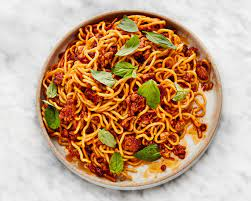

Bon Appetit's Spicy-Sweet Pork Noodles

Description
One of my favorite recipes to cook. Bon Appetit describes the dish as being "inspired by the silky
richness of meaty tomato sauce and the fiery, tangy-sweet flavors of pad kee mao
(a.k.a. drunken noodles). It's full-on explosive flavor in under an hour."
Source
Ingredients
- 2 tbsp. olive oil
- 2 lb. ground pork
- 2" piece fresh ginger, peeled, cut into thin matchsticks or finely chopped
- 8 garlic cloves
- 2 tbsp. sugar
- 2 tbsp. tomato paste
- 2 sprigs basil
- 1/3 cup sambal oelek
- 1/4 cup soy sauce
- 1/4 cup unseasoned rice vinegar
- 1 1/2 cup ramen or 16 oz spaghetti
- salt and butter to taste
Steps
- Heat oil in large pot or Dutch oven. Add 1 lb. of pork and cook until browned on each sides. Break pork into chunks.
- Add garlic, ginger, sugar, and second 1 lb. of pork. Cook until meat is nearly cooked through.
- Add tomato paste and basil. Cook until paste darkens, about 5 minutes.
- Add chili paste, soy sauce, vinegar, and 2 cups water. Bring to a simmer reduce heat to low and cook, uncovered and stirring occasionally, until sauce is slightly thickend, about 30-45 minutes
- Fill large pot with water and bring to a boil. Cook noodles until al-dente.
- Add noodles, splash of pasta water, and butter to sauce until noodles are coated.
- Divide amongst noodles. Enjoy!